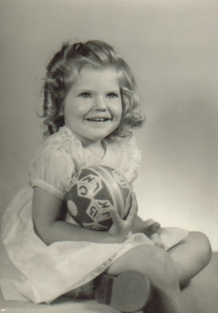
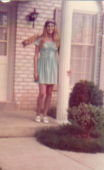
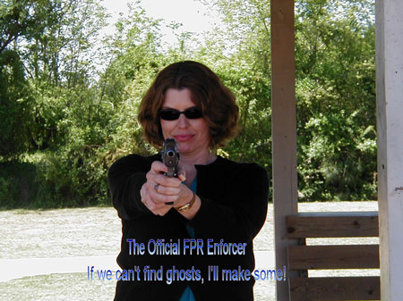

| Beverly Ruth Gerber, taking her middle name from her mother, was born 15 May 1952 in Washington, DC. She was the firstborn of Dick and Ruth Gerber. Her younger brother Alan, whom she tortured endlessly, was born three years later. As a child, Bev was always imaginative. Once she and a friend spread ketchup on themselves and laid in the back yard in an attempt to attract vultures. Later, when she learned to drive, Bev parked the family car sideways in the garage. |
 |
|
 |
She started college at the University of Maryland, but transfered to George Mason where she graduated with a BS in Education. Bev taught for only one year though, before deciding the profession was not for her. On June 7th, 1974 she married Joel Craig. They set up a home in Manassas, VA and together they had two daughters, Cara and Colleen. Unfortunately, Joel's diabetes took his life in 1985. These were tough times for Bev, but, with the help of family, she muscled through and kept her children happy. |
| Then cupid struck Bev a second time and she married Ray Greenfield September 22, 1988 in Manassas. Ray quickly assumed the role of father to her girls as Bev was stricken with breast cancer. Fortunately, she managed to pull through. Then, in 1991, Ray was transfered to Atlanta, GA and they all moved there and set up a home in Alpharetta. Bev and Ray still live there today, enjoying visits from their grandchildren. As of late, Bev has taken up studying ghosts with the Foundation for Paranormal Research (FPR). |
 |